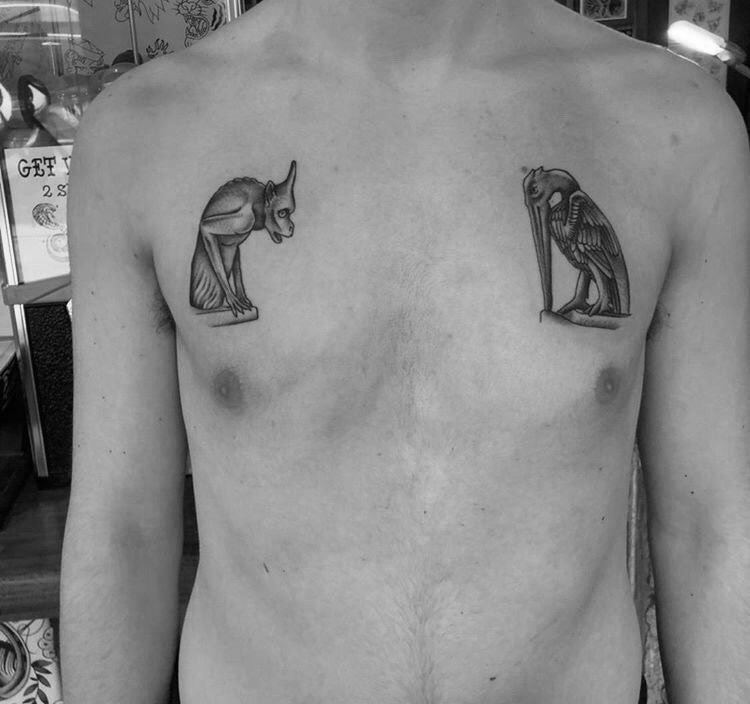

Two gargoyles
Two gargoyles
TATTOO ONE
Name - Chris Turuno
Tattoo and placement - Two gargoyles facing each other on either side of the chest.
How old are you? - 19 years old.
How old were you when you got this tattoo? - 18 years old.
How many tattoos do you have in total? - 4
How much did it cost you? - $500
Where did you get it done? - Magic Cobra tattoo, Brooklyn.
How long did it take? - 4.5 hours.
How impulsive was it? - A bit impulsive, I considered it for three months.
Does this tattoo have a meaning behind it? - No meaning.
Is it your own artwork? - No.
BACK BACK BACK BACK BACK BACK BACK BACK
